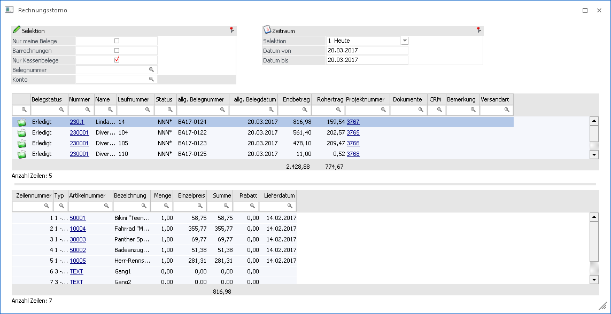

In der WinLine FAKT gibt es den Menüpunkt
1 Erfassen
1 Belegerfassung
1 Rechnungsstorno
In diesem Menüpunkt werden alle Beleg bzw. alle erfassten Barbelege angezeigt und können anschließend mittels Ribbon-Buttons oder der rechten Maustaste angezeigt, gedruckt oder storniert werden.

In diesem Fenster gibt es folgende Selektionsmöglichkeiten:
Ø Nur meine Rechnungen
Bei aktivierter Option werden nur Belege angezeigt, welche vom gerade angemeldeten Benutzer erfasst wurden. Diese Option ist Standardmäßig beim Aufruf des Menüpunkts aktiviert.
Ø Barrechnungen
Mit dieser Option werden alle Rechnungen angezeigt, welche mit einer Barbelegart geschrieben wurden.
Ø Nur Kassenbelege
Mit dieser Option kann eingestellt werden, ob der Benutzer nur Belege sehen möchte, welche mit einer Barbelegart erfasst wurde. Diese Option ist Standardmäßig beim Aufruf des Menüpunkts aktiviert.
Ø Rechnungsnummer
Hier kann eine Rechnungsnummer eingegeben werden um nach dieser explizit zu suchen. Hier steht ein Matchcode zur Verfügung.
Ø Konto
Es kann nach einem bestimmten Konto eingegrenzt werden. Hier steht ein Matchcode zur Verfügung.
Zusätzlich kann nach einem Zeitraum in der Selektion ausgewählt werden oder ein beliebiges Datum deklariert werden. Beim Öffnen des Fensters wird immer das heutige Datum selektiert.
Dieses Fenster ist zusätzlich in zwei Tabellen unterteilt. Die obere Tabelle zeigt die Belege lt. den Selektionen an und in der unteren Tabelle sind die gebuchten Artikel des selektieren Belegs ersichtlich.
Mittels Ribbon-Button "Beleg Info" kann der beleg nochmals angezeigt werden. Mit der Option "Belegdruck" wird der selektierte Beleg geruckt und durch Anwahl des Buttons "Belegstorno" kann ein Beleg Storniert werden.
Hinweis
Die Selektion der Checkboxen und der gewählte Zeitraum werden pro Benutzer spezifisch gespeichert und beim erneuten Aufruf wieder verwendet.